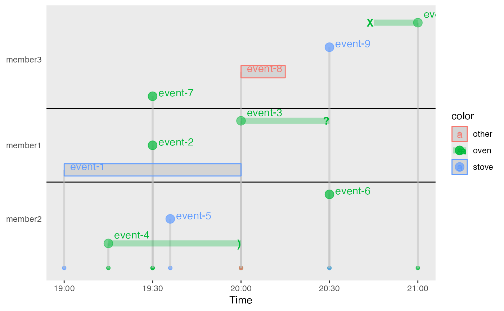

Create a plot for events with labels
Arguments
- dt
a
data.framewith the following columnsidfor ID of each group
idnfor order of IDstartfor starting time
endfor ending time with arrow head
labelfor labeling the starting time
labelendfor labeling the ending time of a intervaltypefor event type as one of p (point), i (interval), b (box)
colora string for event color
- xlab
A string for the x-axis title
- anchor
A Boolean value for the vertical lines linking
startto the x-axis- compact
A Boolean value for reducing the vertical spacing when applicable
Examples
library(ggplot2)
dt = data.frame( id=paste('member',c(rep(c(1,2,3),each=3),3),sep=""),
idn=c(rep(1,3),rep(-1,3), rep(2,4)),
start=1800*c(0,1,2, 0.5, 1.2, 3, 1,2,3,4),
end=1800*c(2,NA,3, 2, 6, NA, 2,2.5,3, 3.5),
label=c(paste('event-',seq(1,10),sep='')),
labelend=c('','','?',')','','','','','>','X'),
type=c('b', 'p', 'i','i','p','p','p','b','i','i' ),
color=c('stove', 'oven', 'oven','oven','stove','oven','oven','other','stove','oven' )
)
time_plot_event( dt )
